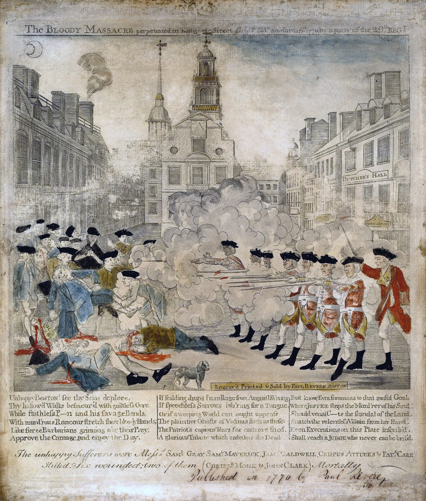
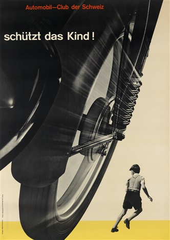

History of Typography
The origin of graphic design stretches back thousands of years ago to when humans first discovered communicative
language. However, present practices of visual design and design principles date back to the 15th century, when
Johannes Gutenberg invented the printing press in 1440. This invention, created during the Renaissance, allowed
the mass production of books and other materials, giving rise to a new profession of designers capable of creating
typographic layouts and illustrations. During the time, the shift in cultural priorities and language barriers led
to regional isolation, fostering the development of distinctive regional styles in design, specifically across Europe.
Regional typographic printing styles developed over the years until the seventeenth century, when technical innovation
waned, while printing spread across the Atlantic Ocean to North America. This new development played a crucial role in
the American Revolution (Figure 5) by fostering unity among the colonies and inspiring opposition to British rule. Following the
revolution, Western graphic design began to shift at the arrival of the new century, particularly in type design.
As the eighteenth century grew near, European countries took new approaches to type and their serifs. The French
strayed away from Old Style roman, taking a new form that was inspired by measurement and drafting instruments. With this,
typeface design evolved to transitional roman style, with an increased contrast between thick and thin strokes. In England,
this contrast became even more apparent, with serifs flowing smoothly instead of sharply. During the same era, Italy
experienced its own developments, inventing modern roman style; the style was geometric, featuring unbracketed hairline
serifs and thin strokes.
The Industrial revolution in the nineteenth century transformed society, initiating radical, social, economic and political
changes. The revolution allowed for evolved energy sources, paving a way for enhanced productivity and increased availability
for mass production of merchandise. In the process, the cost of artworks lessened, allowing graphics to play a crucial role in
marketing amongst the growing middle class.

Figure 5: "The Boston Massacre" Paul Revere (1770)

Figure 6: "schützt das Kind!" Josef-Müller-Brockmann (1952-53)
History of Typography - Continued
Advancements continued within typography, photography and printing until the 1900s, where the accessibility of cameras changed
how imagery could be used in graphic design. Designers began to explore the potential of abstract and reductive design as a means
to address the changing social and economic changes at the turn of the new century. Design continued to evolve and broaden through
until the modern era, where graphics pervade our surroundings. The history of developments made in the design space led directly to
where we are today, with a plethora of design styles, typefaces, aesthetics and compositions, which can be seen in all parts of
the world.
(Figure 6) displays an example of Swiss Typographic Style, which was dominant in campaigns following the second world war. The
design was made by Josef-Müller-Brockmann, who pioneered the art style, along with others within his cohort. A very well-known designer
at the time, “schützt das Kind!” (protect the Child!) was one of his most infamous works, dating to 1952 and 1953. The design was the
winner of a competition sponsored by the Automobile Club of Switzerland as a part of their initiative to promote automobile safety. He
created a series of posters for the campaign, with (Figure 6) being the most recognisable. The poster is well known for its simplicity,
utilising a limited colour palette with a horizontal yellow band at the bottom to contrast the foreground of the composition. This contrast
helps to “isolate the running child and emphasise the disparity between him and the speeding wheel” (Raizman, p.14, 2020). The overall
simplicity of the composition, paired with the consistency of diagonal lines, creates an immediate impact upon the viewer. The image evokes
a sense of impending danger for the child and is a great example of how simple forms of contrast can emphasise a message when utilised
correctly.